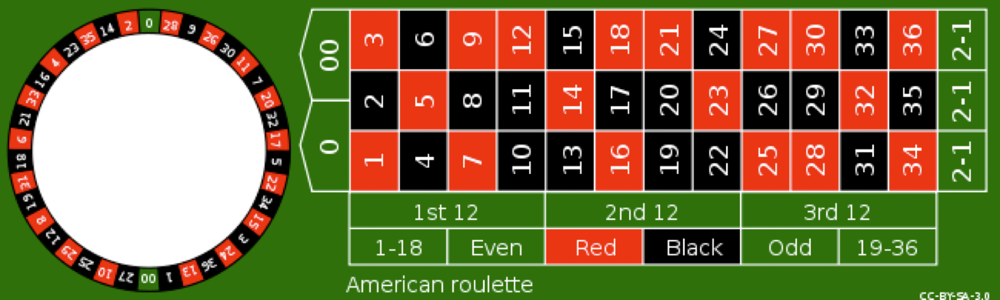
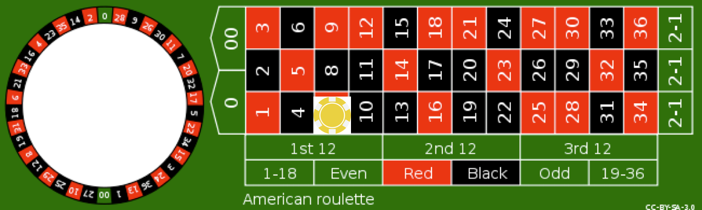
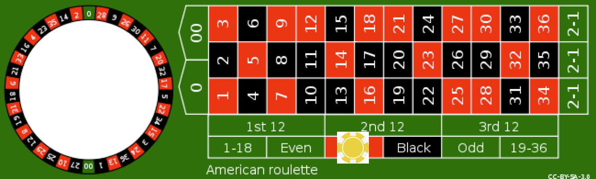
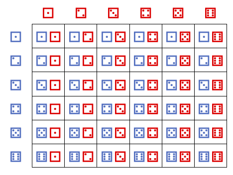

Basics of probabilities#
Reading: Emile-Geay: Chapters 1,2
In this module, we will learn how to model and describe the outcome of random processes.
We’ll start by reviewing some basics of probability theory. I will use some simple examples - dice and roullete - as simple models to illustrate basic probability concepts. We’ll also use these simple examples to build intuition on several properties of probabilities - the law of total probability, independence, conditional probability, and Bayes’s rule - that can be generalized, and will be used throughout the course.
Probability Spaces#
A probability model is a representation of a random process, or random phenomenon. To build a probability model of a random process we need a probablity space, and a random varible. This notebook will focus on probability spaces.
To define a probability space we need:
A sample space, \(\Omega\)
An event space, \(\mathcal F\)
A probability function, \(P\)
Read more about probability spaces on Wikipedia
Discrete Sample Space#
Roulette A simple example to illustrate the concept or probability spaces is the roullete. Here we’ll consider an American Roullete with 38 equally-probably numbers.

Sample Space:
The sample space is the space of all possible outcomes.
Event Space:
The event space is the set of all subsets of the sample space:
Probability:
For a roullete the probability is defined as \(P=1/38\) for each of the 38 possible outcomes in the sample space. Each event also has an associated probability
We note a couple of things. The Sample space and the event space do not uniquely define the probability. For example, we could have a biased roullete (perhaps using a magnet and a metal ball), such that the ball is more likely to fall on particular numbers. In that case, the probability of individual outcomes in the sample space may not be equal. However, as we discusss more below, the total sum of probabilities across the possible outcomes still has to equal 1, unless there is a chance that the ball falls off the roullete table and none of the outcomes is hit.
Note also that outcomes are different from events. A single outcome, e.g. a roullete roll of \(\color{green}{00}\) is associated with multiple possible events. It helps to think of an event as a possible bet , and the event space as the space of all possible bets. Any bet you make on the roullete can be expressed as a subset of \(\mathcal F\), and has a probability associated with it.
For example, consider a bet on a single number (e.g. on \(\color{red}7\)), also called a straight-up bet. This event is equivalent to the outcome of the roullete being in the set \(E_1=\{\color{red}1\}\). The probability of this event is \(P(E_1)\)=1/38.

Alternatively consider a bet on red. This event is equivalent to the outcome being in \(E_2=\left\{\color{red}{1},\color{red}{2},\color{red}{3},\ldots,\color{red}{36}\right\}\), and its probability is \(P(E_2)=18/38\).

Note: Formally, the event space is a \(\sigma\)-algebra, and the probability function is a measure.
Infinite Sample Spaces#
Why do we need to go through these definitions of event spaces and sample spaces? For probability spaces with a finite number of possibl outcomes we can assign a probability to each outcome and it becomes trivial to compute the probability of events. However, that is no longer the case when we start working with infinite sample spaces, such as an interval on the real line. For example, if the sample space of a random process is the interval \(\Omega=[0,1]\in \mathbb R\), there are an infinite number of possible outcomes, and thus not all of them can have finite (non-zero) probability. In that case, we can only assign finite probabilities to sub-intervals, or subsets of the sample space. In other words, in the most general case we can only assign finite probabilities to member of the event space \(\mathcal E\). However, the same rules of probabilites apply for both infinite and finite samples spaces, and it is easier to get an intuition for them on small, finite spaces.
For purposes of this class, we don’t need to worry about probability spaces, event spaces, and probability functions. However, simple examples such as these are useful in illustrating some very general properties of probabilities that we will use extensively in the class, especially in the chapters on statistical inference and Bayesian data analysis.
Calculus of Probabilities#
Combining probabilities#
The probability of roullete bets illustrates a general rule about combining probabilities. How do we compute the probability of an event? Consider two friends Alice and Bob, betting on the roullete, and say we want to compute the probability that at least one of them wins. We’ll call this event \(E\).
First, let’s say each of them bets one of the green zeros. Rolling a green zero is equivalent to rolling either \(\color{green}0\) OR \(\color{green}{00}\). The two friends going home with some money is associated with the subset \(E=\{\color{green}0,\color{green}{00}\}\)of the event space. If we allso associate Alice winning with event \(A\) with rolling \(\color{green}{00}\) and Bob winning event \(B\) with rolling \(\color{green}{00}\), we can write:
Notice that
\(\{\color{green}{00,0}\}\)=\(\{\color{green}{00}\}\cup\{\color{green}{0}\}\)
\(\{\color{green}{00}\}\cap\{\color{green}{0}\}=0\)
\(P(\{\color{green}{00}\}\cup\{\color{green}{0}\})=P(\{\color{green}{00}\})+P(\{\color{green}{0}\})\)
On the other hand, consider a case where Alice bets on all the numbers between \(1-6\), with win probability \(P(A)=6/38\) and the Bob bets on his favourite numbers, \(3\) and \(33\), with win probability \(P(B)=2/38\) Them winning something is associated with \(E=\{1,2,3,4,5,6,33\}\), with \(P(E)=7/38\). Notice that in thise \(P(E)\neq P(A)+P(B)\)
Important
Thus, the general rule of combining probabilities is: $\(P(A \text{ OR } B)=P(A \cup B)=P(A)+P(B)-P(A\cap B)\)$
with
Valid Probability Functions#
In order for a function on the event space to be a valid probability function, it neeeds to obey the following properties
Important
\(P:\Omega \rightarrow [0,1]\)
\(P(\phi)=0\), where \(\phi\) is the null-set
\(P(\Omega)=1\)
If \(E_1\) and and \(E_2\) are mutually exclusive events (i.e. \(E_1 \cap E_2=\phi\)), then the probability of \(E_1\) OR \(E_2\) occuring is
\[P(E_1 \text{ OR } E_2)=P(E_1\cup E_2)=P(E_1)+P(E_2)\]
Joint Probabilities#
The joint probability of two events is the probability of both being true simultaneously. Consider the probability of both Alice AND Bob winning. We would denote this as
The latter notation is the one we will be using a lot throughout the course. If each of them bets on one of the zeros, and there is thus no overlap between their bets, the probability of both winning is zero. In the second case, where Alice bets on \(1\) through \(6\) and Bob bets on \(3\) and \(33\), the probability of both of them winning is the probability of rolling a \(3\), whith the intersection of the two events. This is a general rule of probability calculus:
Important
The joint probability of two events is the probability of their intersection:
\(P(A,B)=P(A\cap B)\)
\(P(A,B)=0 \text{ if } A\cap B=\phi\), and we would say that \(A\) and \(B\) are mutually exclusive
Conditional Probabilities & Independence#
Here we’ll review some definitions and properties of conditional probabilities and independence that we will use throughout the course. This is more easily done when we have two random processes occuring simultaneously. So we will consider the roll of two independent and fair dice.
The sample space, \(\Omega\) is illustrated by the following table:

The event space is the set of all subsets of \(\Omega\) and the probability function for a fair dice is a constant functoin \(P=1/36\).
For example the event \(E\)=”a total roll of 3” is the intersection of two different outcome “red dice rolls 1 and greeen dice rolls 2” is different from “red dice rolls 2 and green dice rolls 1”, i.e. \(\{\color{red}1,\color{green}2\} ,\{\color{green}2,\color{red}1\}\) The probability of rolling a 3 is thus \(P(\{\color{red}1,\color{green}2\})+P(\{\color{green}1,\color{red}2)\}=2/36\).
We can also define events applicable to a single dice. For example, “the red dice rolled a 1”. The probability of the red dice rolling a 1 is 1/6, and it can also be written as the union of all the six outcomes in which the red dice rolls 1.
Independent Events#
The role of one dice should not affect the role of the other. The two dice are independent.
Example: what is the probability of rolling a ⚅ ⚅ is 1/36. It is also the probability of rolling both a ⚅ and a ⚅ at the same time. The probability for each dice 1/6, so their combined probability is
\(P(\)⚅ ⚅\()=P(\)⚅\()P(\)⚅\()\)
Important
Definition: Two events are independent iff:
Fun sidenote: although it’s harder, we can define independent events for a single dice! Consider the two events:
A: “Green dice rolled even” with probability \(P(A)=1/2\)
B: “Green dice rolled less than three”, with probability \(P(B)=1/3\)
The joint probability of both events happening is the probability of the dice rolling a 2, so it is \(P(A,B)=1/6=P(A)P(B)\)
Conditional Probability#
Consider the previous example, with two independent events. How can two events on the same dice be independent? It’s easier to think through this process sequentially, or conditionally. Think of the probability of both “rolling even” and “rolling less than three” as “the probability of rolling even” and, subsequently, also “rolling less than three”. The truth values of those statemetns do not change if you look at them one at a time.
If you roll even, the probability of rolling less than 3 is 1/3, i.e. the probability of rolling a 2.
If you roll odd, the probability of rolling <3 is still 1/3, i.e. the probability of rolling a 1.
So whether you roll odd or even does not impact the P of rolling less than three. Thus, the two events are independent.
This notion of whether the realization of one event affects the probability of another event is quantified using conditoinal probabilities.
Notation: \(P(A|B)\)=The conditional probability of event \(A\) being true given that event \(B\) is true.
Examples: What is the probability of the event “A” =”rolling a combined 10”? It is the probability of the events consisting of and it is 3/36. Now, what is the probability of rolling a combined 10, given that the red dice rolled a 4. Well, it is the probability of the green dice rolling a 6, which is 1/6.
\(P("10")=3/36\)
\(P("10"|\)⚃\()=1/6\)
Let’s use our sequential thinking to come up with a very useful properties of conditional probabilities. Consider the joint event of “A”=”rolling a combined “10” and “B” the red dice rolling 4.
The probabiliy of both being true is equal to 1/36. But you can think of it as the probability of rolling a 4 with the red dice (P(B)=1/6), and then rolling a “10” given that the red dice rolled 4 P(A|B)=1/6).
Important
Definition: The following relationships hold between joint and conditional probabilities:
Bayes Rule#
The above relation between conditional probabilities and joint probabilities leads us to one of the most useful formulas in statistics: Bayes’ Rule. Notice that we can write \(P(A,B)\) as either \(P(A|B)P(B)\) or \(P(B|A)P(A)\). We can manipulate this relation to understand how the relation between the conditional probability of A given B and the conditional probability of B given A
Important
Bayes’ Rule: $\(P(A|B)=\frac{P(B|A)P(A)}{P(B)}\)$
Law of Total probability#
Important
The law of total probability says that if we have a partition of the sample space, \(A_n\) such that \(A_i\cap A_j=\phi\) if \(i\neq j\). and \(\cap_{n} A_n = \Omega\), then
This should be intuitive with the fair dice example. For example, let \(E\) be the event ‘A total roll \(D=6\) was rolled’. A partition \(A_n\) could be ‘the dice \(X\) rolled n’ for \(n\) between 1 and 6. Thus, the total probability of \(D=6\) is the sum of the probability of rolling a seven given that \(X\) rolled 1, plus the probability of rolling a seven given that \(X\) rolled a 2, and so on….
Random variables#
Definition: A random variable is a real-valued function whose whose values depend on outcomes of a random phenomenon.**
Consider the case of a single fair dice, with possible values, i.e. sample space:
We can define a random variable \(X\) whose value is equal to the dice roll. This random variable could take discrete values between 1 and 6.
If the dice is fair, than the probability of X taking each value is the same, and equal to 1/6. We would call this a discrete uniform random variable.
At this point it may seem like I’m inventing new terminology. For example, why do we need to call \(X\) a random variable, and talk about the possibility that it takes on different values? It seems like the probability of X taking on each value is just the probability of each event in \(\Omega\)?
Here is another example of a random variable on the same sample space: \(Z\) is a random variable which takes the value \(Z=0\) if the dice roll is odd and \(Z=1\) if the dice roll is even. Thus, even though \(X\) and \(Z\) are associated with the same sample space and events, they take on different values. In this case, since \(Z\) takes on only two values, 0 and 1 \(Z\) would be called a Bernoulli random variable.